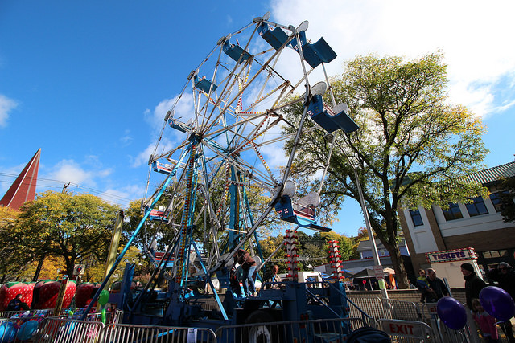

Food
Ithaca's premier event of the Fall, Apple Harvest Festival presented by the Tompkins Trust Company, is a three day celebration of food, fun, and apples!
Three fun-filled days of apples, local produce, fresh baked goods, family entertainment, games, rides, prizes and live performances on two stages.
Fun

Apple Harvest Festival is a great introduction to the farms and artists in Ithaca and its surrounding farming communities.
Fishing
Fishing at Ithaca Fall is fun!